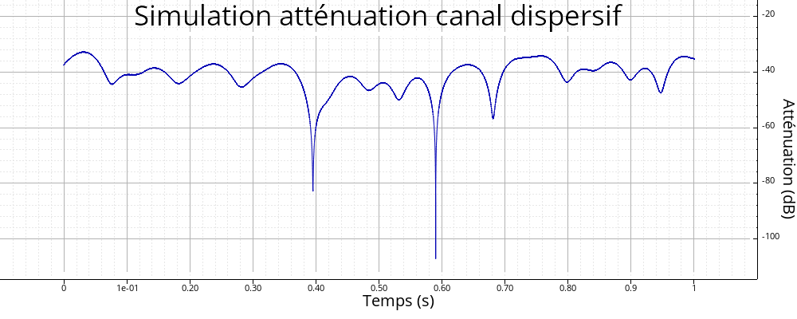

Création d'un simulateur de canal dispersif.
Espace de nom : tsd::telecom
Prototype
sptr<Filtre<cfloat, cfloat, CanalDispersifConfig>> canal_dispersif(const CanalDispersifConfig &config)
Paramètres
Retourne
Filtre signal bande de base (cfloat) \(\to\) Signal bande de base, après atténuation.
Description
Cet objet permet de simuler un canal de Rayleigh (sans trajet dominant) ou de Rice (avec trajet dominant), en bande de base.
Exemple
CanalDispersifConfig config;
config.lien non trouvé : [structtsd_1_1telecom_1_1_canal_dispersif_config_1a1acf4321ad17a429122548ed60c6779c]fd = 10;
config.lien non trouvé : [structtsd_1_1telecom_1_1_canal_dispersif_config_1a77a409c8222cd1771ff1e8a0e603a4c8]fe = 1e4;
config.lien non trouvé : [structtsd_1_1telecom_1_1_canal_dispersif_config_1a7013be35f2edc4e115db87e79011cccf]type = lien non trouvé : [group__telecom-simu_ga6c24b6dcb6bec5b2fa2f0eb970ec4d38_1gga6c24b6dcb6bec5b2fa2f0eb970ec4d38a5b29fc2cf98302b220e84a989dc913a0]TypeCanal::RICE;
config.lien non trouvé : [structtsd_1_1telecom_1_1_canal_dispersif_config_1a76953731aff2d3d442d4faebdc180055]K = 2;
auto canal = canal_dispersif(config);
soit x = Veccf::ones(config.lien non trouvé : [structtsd_1_1telecom_1_1_canal_dispersif_config_1a77a409c8222cd1771ff1e8a0e603a4c8]fe);
soit y = canal->step(x);
